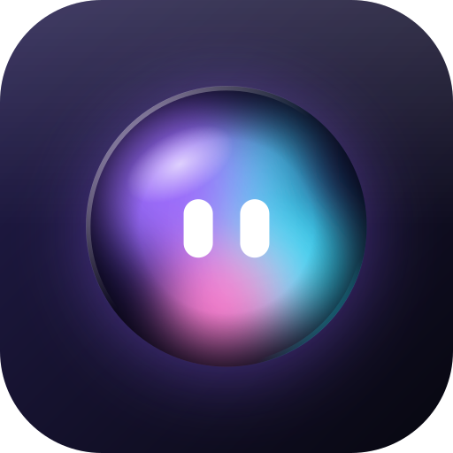
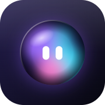

Chosen from round 6 (donna-logo-ideas-r6.html, #02). A glass sphere with violet, cyan and pink light drifting inside, and two soft eyes. It is an AI presence with a personality: it breathes when idle, its eyes blink, and while Donna works the colours speed up and the eyes glance from side to side.
In the app it is DonnaOrb in web/src/icons.tsx. Below 28px it switches to a simplified version without blur filters and with bigger eyes, so it stays crisp in the nav, chat avatars and favicon.


In the app the wordmark stays in Geist Pixel (DONNA), so the pixel theme lives in the UI and the orb is the mark. Inter is the alternative for anything outside the app.
| web/src/icons.tsx | DonnaOrb React component (size, state: idle / thinking / static, title) |
| web/public/donna-logo.svg | Full logo with glow, transparent, 512 px |
| web/public/favicon.svg | Small variant, cropped to the orb (browser tab) |
| web/public/app-icon.svg | Orb on the midnight squircle tile |
| web/public/icon-512.png · icon-192.png · apple-touch-icon.png | App icon rendered as PNG at 512, 192 and 180 px |